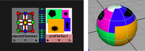

通过“PSD 文件”节点，可以将 PSD 文件用作 Maya 中的纹理网络。它类似于 Maya 的“文件纹理”节点，但仅适用于 PSD 文件。

默认情况下，Maya 会将 PSD 文件链接到包含在 PSD 文件中的合成图像。Maya 只能读取图像和向量层，因此在 PSD 节点链接到 Adobe Photoshop 的合成图像（默认情况）时，Maya 会支持 Adobe Photoshop 支持的所有内容，包括（例如）层样式、调整层、文本等。
但是，您可以选择将 PSD 节点链接到层集，在这种情况下，不支持层样式和调整层，应在 Maya 中读取 PSD 文件之前对其进行光栅化。
带有层集的 PSD 文件的优点
带有层集的 PSD 文件有助于进行迭代绘制：
- Adobe Photoshop 艺术工作者可以在保持 Maya 中的连接的同时添加、修改或删除层集中任意数量的层（请参见在 Maya 中创建包含层集的 PSD 文件）。
- Maya 艺术工作者可以将 PSD 节点转化为“分层纹理”(Layered Texture)，并将层集视为连接到“Hypershade”中的分层纹理的多个“PSD 文件纹理”(PSD File Texture)。
注：
Maya 会将层集中的所有层视为单个展平图像。
使用 Maya 中现有的 PSD 文件
- 在“Hypershade”中，使用新的“PSD 文件纹理”(PSD File Texture)节点加载 PSD 图像文件（“创建 > 2D 纹理 > PSD 文件”(Create > 2D textures > PSD File)）。
PSD 文件将链接到 Adobe Photoshop 的合成图像。
- 如果该文件具有多个遮罩通道，可以选择要查看的通道。从“属性编辑器”(Attribute Editor)中的“要使用的 Alpha”(Alpha to Use)属性选择遮罩。
- 如果 PSD 文件具有层集，则可以选择要链接到的层集。从“属性编辑器”(Attribute Editor)中的“链接到层集”(Link to Layer Set)属性选择层。
- 与 Maya 中的任何“文件纹理”(File Texture)一样，您可以设置任何“PSD 文件纹理”(PSD File Texture)属性。
请参见文件属性(File Attributes)。
将带有层集的现有 Adobe Photoshop“文件纹理”(File Texture)转化为“分层纹理”(Layered Texture)
- 在“Hypershade”中，执行下列操作之一：
- 若要查看连接到分层纹理的多个层集，请对分层纹理重新制图。